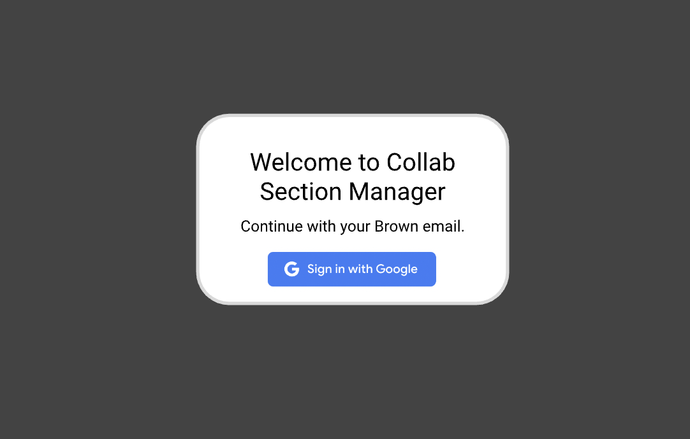
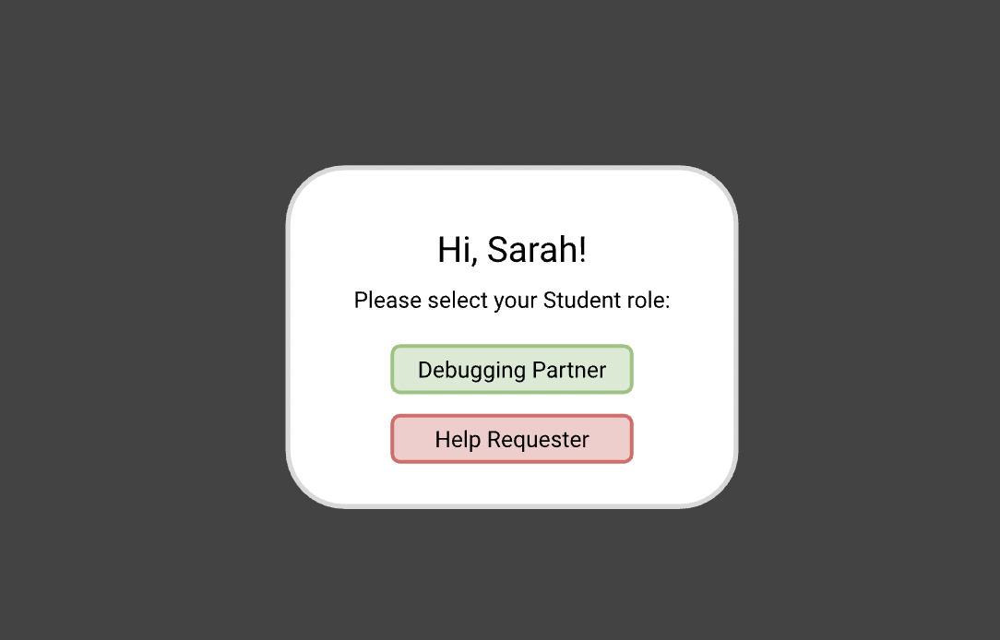
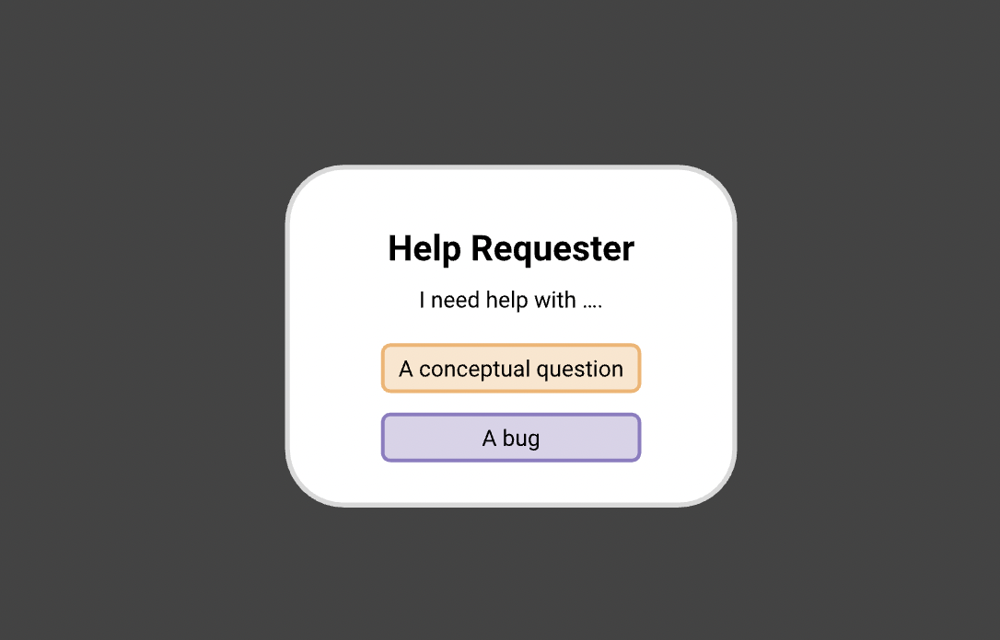
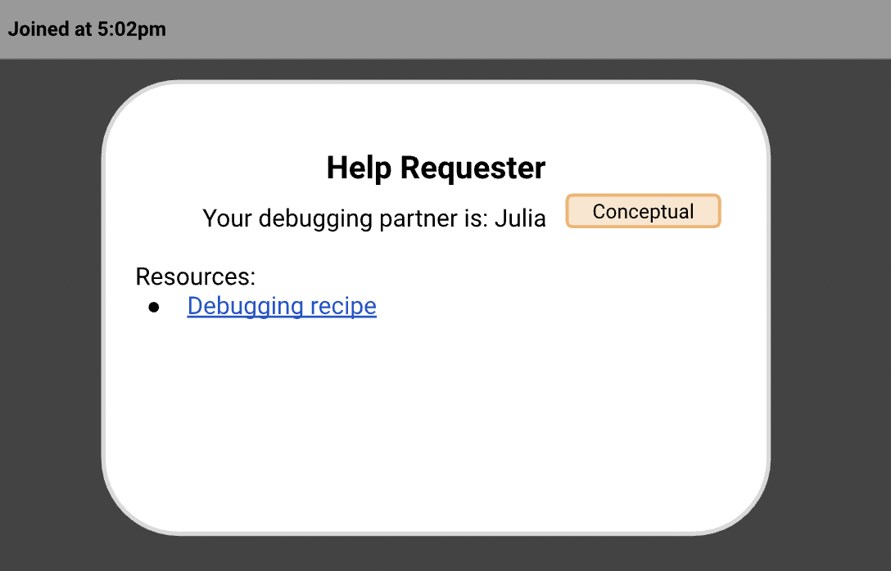
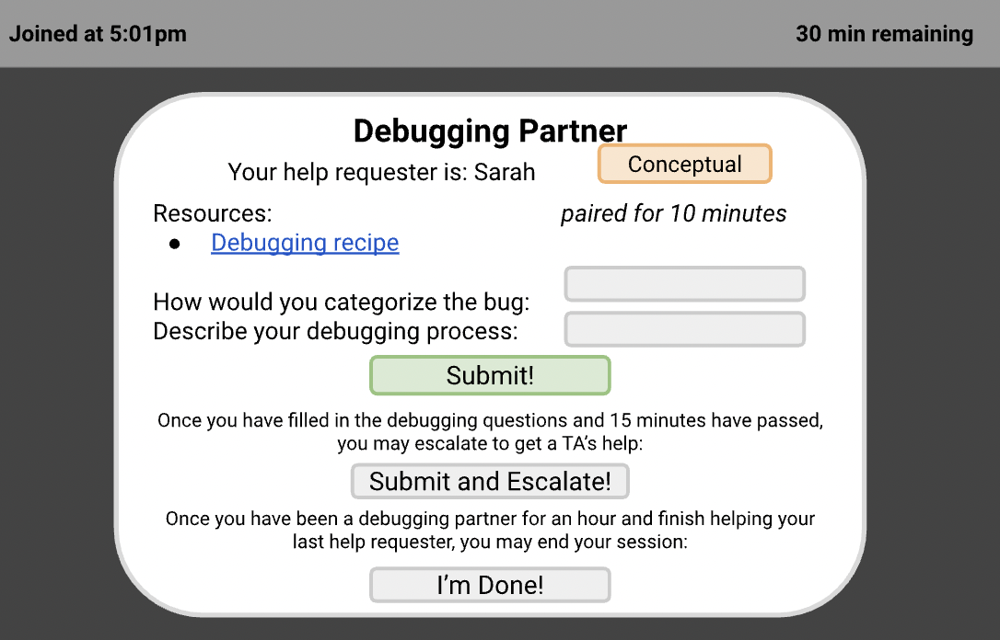
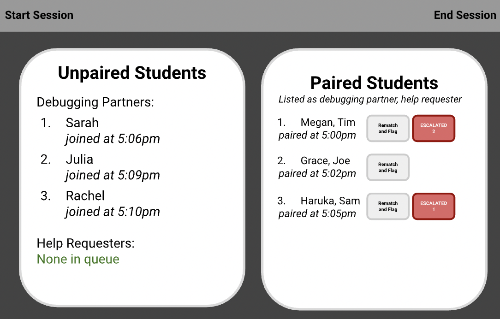
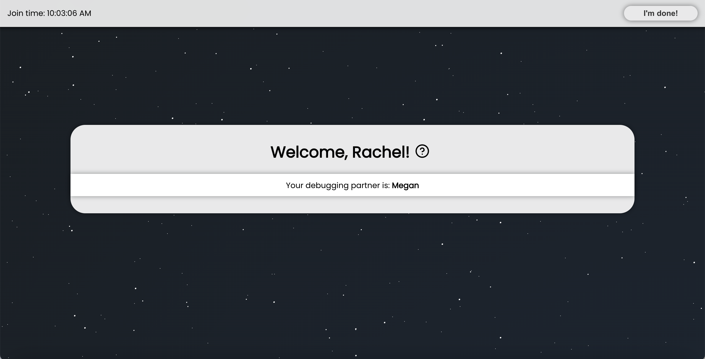
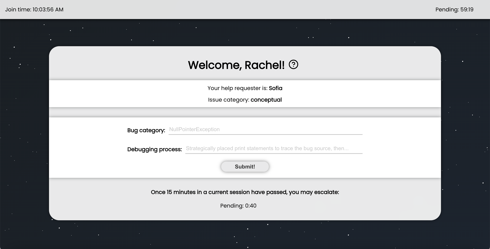
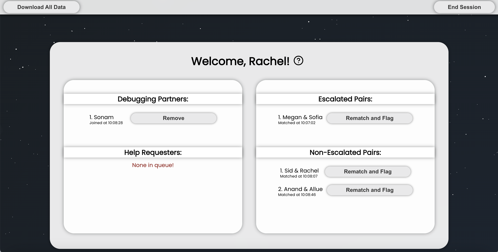

Role
Front-End Developer and User Researcher
Team
Megan Ball, Rachel Brooks, Sarah Ridley and Julia Zdzilowska
Timeline
November - December 2023
Skills
React, Typescript, CSS, Java
Overview
I worked with a team to code a website to organize collaboration hours (collab hours) for my software engineering course, and we presented a demo of the final product to course staff. This project involved creating a proposal, conducting user research, brainstorming features and implementing our solution.
Rather than having office hours, every student in the software engineering course serves as a debugging partner every other week and helps students debug their code. Here are some key terms to understand this case study:
-
Collab hours: Hours dedicated to students collaborating and debugging code together, with TAs as facilitators
-
Debugging Partner: Student that helps to debug code
-
Help Requester: Student that has bug
-
Instructor: TA or professor
-
Escalation: After 15 minutes, the pair can "escalate" the issue and request help from a TA
Problem
Collab hours are hectic: the TAs call out names to pair students, while also trying to help students with escalated issues. Also, we there is large variety in how collab hours are run and the partnering process. Some TAs assign a debugging partner and others ask for volunteers to help. Finally, there are many resources used in collaboration hours, but the tools are scattered across various locations.
This project could ease this experience for students and instructors, making collab hours more productive, organized and standardized.
User Research
Questions
To start, I conducted user research to understand the needs of students and staff, which then shaped our project. Here are some of the questions that I asked:
-
What currently works and could be improved about collab section?
-
What are the most important parts of collab section?
-
As a *insert role*, what features are non-negotiable in an application to facilitate collab hours?
-
As a *insert role*, what features would be nice but not necessary in an application to facilitate collab hours?
Findings
All of the users that we interviewed found value in the creation of an application to facilitate and organize collab hours.
Student
-
Useful skill for students to learn to help each other
-
TAs often busy with logistics, leading to longer wait times for escalation
-
Collab hours currently not effective for conceptual questions -> option to specify if conceptual or bug
Teaching Assistant
-
Pairing process could be improved as some students debug multiple times while others don't -> use algorithm to ensure equal opportunities
-
All TA duties (attendance, pairing, escalation) tracked on different platforms -> create one centralized app and automate attendance and pairing
-
Students try to get TA help before 15 min period -> timer of how long students have been partnered
Professor
-
Learning goal not achieved if not able to serve as debugging partner
-
Structure of collab hours likely changing in future -> code should be well-documented and use generic types/strategy pattern
-
Collab hours successful because disrupts traditional format of CS hours (lots of bugs fixed and shorter lines)
Features
These user interviews helped us brainstorm the key features of our website, which are shown below.
Dashboards
Instructor; Help Requester; Debugging Partner
Attendance
Automatically collected from login; Instructors can download
Matching
Based on help requester and debugging partner position in queue (added to queue when login)
Debugging Form
Embed on website; Saves to CSV on backend
Escalation
Available after 15 minutes (timer); Displays who is escalated on instructor dashboard
Removal
Ability to remove debug partner or rematch/flag if partnered
Type of Assistance
Help requester can select whether bug or conceptual question
Security
Login with Google (firebase authentication); Automatically redirects to correct dashboard
Initial UI Sketches
We also created initial UI sketches to visualize the user flow and the app's appearance before programming, aiming for a minimalistic and intuitive design. This also allowed us to consider the interaction between the front-end and back-end, such as what happens when a button is clicked.
Login Page
Student Role Choice
Help Requester Issue Selection
Help Requester View
Debugging Partner View
Instructor View
Website
We coded the website over four weeks, dividing responsibilities based on our strengths. I oversaw front-end and back-end integration as well as the implementation of a Firebase login system. This is what the final website looks like:
Login Page

Student Role Choice

Help Requester Issue Selection

Help Requester View
Debugging Partner View
Instructor View
Reflections
I enjoyed engaging in the process of identifying a problem and then building a solution. User research was especially crucial to ensure that we addressed the needs of all stakeholders involved. Ultimately, the group was successful because of our constant communication, strong organization and ability to ask each other for help.